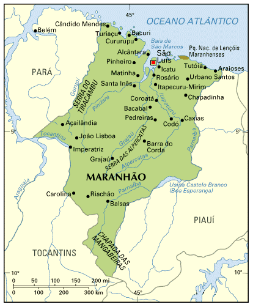
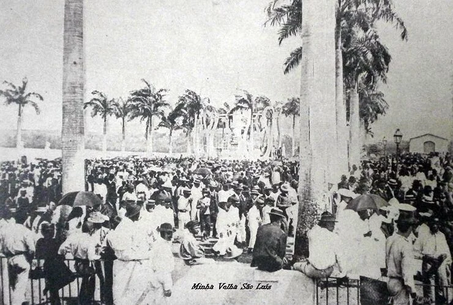

Região: Nordeste
Capital: São Luís
População: 7.075.181 habitantes
Área: 331.983,293 km²
Clima: Tropical úmido

O atual território do Maranhão começou a ser disputado por europeus no ano de 1500 com a chegada dos espanhóis, mas foram os franceses que fundaram o primeiro núcleo urbano da região em 1612: a cidade de São Luís. O domínio francês durou pouco, pois os portugueses expulsaram os invasores em 1615 e assumiram a ocupação efetiva do local. Para proteger a área de novas cobiças estrangeiras — o que se provou necessário após uma rápida invasão holandesa em 1641 —, Portugal oficializou a criação da capitania do Maranhão e, mais tarde, do Estado do Maranhão e Grão-Pará, território que só foi dividido em 1772.

Durante o século XIX, a região viveu uma época de ouro impulsionada pela produção de algodão e cana-de-açúcar. Esse período de forte expansão econômica e cultural transformou São Luís em um importante polo do meio-norte do país, deixando como herança a rica arquitetura de seu Centro Histórico. Contudo, as mudanças políticas e econômicas do final do século XIX interromperam esse crescimento, levando o Maranhão a um longo ciclo de estagnação que reflete, até hoje, em desafios sociais para o estado.